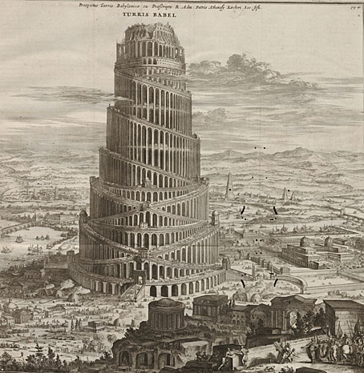

Martin Ouellet
BABEL RAGE
Sous-titre
Fabrique
Sommaire
Crédits
Crédits
Auteur : Martin Ouellet
Titre : Babel rage
Date de parution : avril 2001
Éditeur : TROIS
Pages : 130
Sujet : poesie quebecoise
ISBN : 9782895160243 (2895160244)
Préface
La vraie haine, elle vient du fond, elle vient de la jeunesse perdue au boulot sans défense. Alors celle-là qu’on en crève, y en aura encore si profond qu’il en restera tout de même partout. Il en jutera sur la terre assez pour qu’elle empoisonne, qu’il pousse plus dessus que des vacheries, entre des morts, entre les hommes.
Louis-Ferdinand Céline,
Mort à crédit.
Donc, des gens bien assis,
Exempts de soucis,
Méfiez-vous du poète,
Qui peut, ayant faim,
Vous mettre, à la fin,
Quelques balles dans la tête
Charles Cros,
Le Collier de griffes.
1ère Partie
BABEL RAGE
MANIFESTE
serre ben le garrot
autour de la langue
pour un autre shoot d’encre noire
qui va te remonter le ressort verbal
et te recrinquer le moulin à blasphèmes
c’est reparti
pour une autre petite partie
de dégueulade en règle
les mots bandent
et commencent à se chercher
un trou dans la phrase
te questionne pas
sur l’acte d’écrire
fais-le pour te soulager
comme la masturbation
cherche pas le comment du pourquoi
qu’est-ce qu’on en a à crisser
que ta violence soit pas artistique
ton angoisse pas métaphysique
pis ta révolte pas poétique
rimbaud crèverait
de voir ses œuvres dans la pléiade
en caractères ben alignés
emprisonnées sous couverture de cuir
son enfer imprimé sur papier bible
à tranche dorée
toute ben classée
entre st-simon et les présocratiques
la souffrance a pas de valeur stylistique
un animal qui hurle pris au piège
ça se soucie pas trop trop de l’esthétique de son cri
un mot est à sa place
quand il gueule où ué censé crier
et qui chiale quand c’est l’temps
de pleurer
tout c’que t’as besoin d’savoir
c’est qu’les mots c’est les armes
de ceux qui ont pas les couilles de tuer
par conséquent
quand un cave te dit
qu’la littérature c’est noble
tu peux l’envoyer chier
parce que nous aut’on sait
qu’ça vaudra jamais
les coups d’pied au cul
qu’on est trop lâches pour donner
la poésie c’est pas d’la musique
ni un art décoratif
ni une bébelle d’universitaires du dimanche
c’est le dernier langage avant la rage
l’équivalent humain de l’aboiement
un cri qui s’arrache le vinaigre des veines
un cadavres échangé contre une tache d’encre
une machine de nerfs broyés
qui visse les yeux à l’horreur
dans une dernière tentative d’humanité
LA SOUVERAINETÉ DE LA CRASSE
je veux communier
avec ce soleil mort
qui dissout l’horizon
comme de la poudre
manger mes mains
comme des hosties de bile noire
cracher le pain de ma fureur
dans vos bénitiers d’amour-propre
et étaler des fourrures de sang caillé
sur le plancher de vos servitudes
je suis le dernier spécimen
d’une race de bâtards non-brevetée
de traîtres envers la réalité
le roi de la montagne de marde
le patriote du dépotoir
l’enragé ethnocentrique
de la cour à scrap
je suis le seul citoyen
de mon régime de guerre civile
et je défends mon enfer
de vos céramiques shinées
la tête à l’envers
comme un char capoté
le muscle dégonflé
comme un tire flat
avec pour me soutenir
la puissance de mon impuissance
vous ne m’aurez pas
je résisterai aux assauts de
vot’bonheur
au bélier de vot’fausse compassion
je suis une citadelle imprenable
une forteresse entourée de douves
creuses comme le mépris
je vous regarderai
du haut de mes meurtrières
jouer vot’comédie musicale en
lazy-boy
vot’ parodie de santé qui m’rend
malade
et je me laisserai bouffer par la rouille
vous ne m’amputerez pas
de mes bouttes gangrenés
je m’enfermerai
dans mon armure de pourriture
dans ma carcasse de carapace crasse
et je me laverai
dans un baril
de vieille huile sale
et de bière tiède
pour me nettoyer de vos savons
HOW TO MAKE A MONSTER
orphelins des mutations
surfant la mort
sur des vagues de dépotoir
la moiteur obscène
du soleil pourri
imprègne vos cuirs
de cancer et de feu
vos cerveaux sont des zones sinistrées
semblables à des bunkers nucléaires
tapissée d’écrans noir et rouge
vomissant d’horreur
dans les villes-cimetières
les condos-cercueils
et les HLM fosses communes
les troupeaux
de zombies décharnés
broutent paisiblement
parmi les ruines d’humanité
pour mettre la mâchoire
sur quelque lambeau de viande
oubliée
les bras cannibales tendus
vers l’appât du jour
le ciel vomit les cocktails toxiques
que nos cheminées lui font avaler de
force
la terre s’effrite sous nos pieds
cimentés d’indifférence
les déserteurs
apprivoisent la douleur
portant leur peinture de guerre
comme une éponge de viande
saturée de conscience et de cicatrices
dernier point d’ancrage en soi
nombril de la révolution
faire acte de présence
en revendiquant la possession
totale de son corps
fantasme biomécanique
du nerf tressé de câbles d’acier
un œil cybernétique rouge comme le \
sang
greffé au creux d’une orbite gluante
qui le suce
plaques métalliques cousis sous la
peau
carapace de chevalier synthétique
exosquelette d’insecte irradié
bâti pièce par pièce
pour jouir de son triomphe
sur la nature
rafales de désespoir infantile
les bombardements japanimés
font écho à ceux des nouvelles de six
heures
en gestation dans son bac à developpement accéléré
le héros s’apprête à célébrer
une messe sanglante en son honneur
le cerveau déchiré d’éclairs
télékinésiques
écrasant un uzi chargé à bloc dans
son poing vengeur
il n’a été programmé que pour être
invincible
blindé imperméable indestructible
infaillible
et assez puissant pour détruire une
mégapole en deux jours
le rêve de n’importe quel ti-cul terrorisé par le monde
rêvez en paix
votre apocalypse
made in japan
des arcades aux mangas
le message est clair :
the world is a creepy place to live
and soon it will go up in flames
un soluté de sang technicolor
de larmes de barbie torturées
et de sueur de sperme
englue le masque du serial-killer
impuissant à trouver son rôle dans un
monde
où les monstres ne servent qu’à
bouffer du crétin
et à offrir des sensations fortes
à ceux qui ont payé leur place au
colisée
pour la corrida éros-thanatos
mutilations nihilisme
soulignés d’encres de peau
et de l’attirail clinquant des primitifs
apprentissage de la mort
rites initiatiques
cultes sexuels
domination fièvres humiliation
moiteur piqûre délire soumission
rage frémissement morsure
brûlure baiser déchirement
chaleur humidité miel
sueur sel parfum violence
peau griffes léchure
écartèlement peur dilatation
succion frottements pincements
irritation grattements souffle
pénétration ondulements inspiration
coulissement lubrification
mordillement
fusion noyade séparation
soupirements renaissance
les chairs sont défrichées
et prêtes à être semées
nous n’avons presque plus rien d’humain
nous entrons millimètre par millimètre
cellule par cellule puce par puce
dans le car-wash à bateaux ivres
qui frottera les corps avec des brosses
de pierre
pour les débarrasser de leurs peaux
mortes
la beauté
se trouve à portée
de moignon
PROCHAINE STATION?
en métro
comme dans un wagon à bestiaux
l’âme en laisse
je regarde avec
mes yeux de chien battu
les ti-caniches déguisés
en gros bouledogues
qui font semblant comme moi
d’avoir le goût de rentrer
au chenil
tabarnac j’ai des puces
qui me sucent à blanc
et je souris
parce que les chiens errants
finissent à la fourrière
et est-ce qu’on est plus libre
chrisse
quand on hypothèque son corps?
CE SERAIT SI BON
ce serait si bon
que poussent des crocs
à la mâchoire de ma pitié
et d’un coup de gueule déchiqueter
l’indifférence des idiots
arracher les yeux
de tous les inconscients
pis leur montrer
qu’ils voyaient pas plus
avec que sans
ce serait si bon
de foutre le feu
à tous les monuments
et de marcher
sous le flambeau
d’la marseillaise
ressuscitée
renverser dans les clameurs de la révolte
la statue d’la liberté
qui est plus juste bonne à attirer
les touristes curieux de voir
que la liberté ça peut se photographier
ressortir robin des bois
des contes poussiéreux
et lui botter le cul
pour qu’il aille nous voler
de quoi manger
et surtout boire un coup
ce serait si bon
de refaire à coups de caps d’acier
le portrait de ces chers assis
qui depuis rimbaud se sont multipliés
(quand y a trop de fruits pourris
dans un arbre généalogique
y faut l’abattre ça devient dangereux)
aller se faire rôtir des guimauves
au-dessus de la ville incendiée
chanter à tue-tête
avec du sang bouillant dans la gorge
en tapant sur des tam-tam de peau
humaine
ce serait si bon
si je pouvais rien qu’un fois rien
qu’un
me débarrasser de mon humanité
et me faire faire une chirurgie plastique
pour avec une tête
de bourreau sans remords
et pour enfin dire MERDE
on est dans un cul-de-sac
finies les illusions
on tire un coup et on s’éclate
on va danser parmi les ruines
de l’idéal humain
je me grefferais un cœur de sans-cœur
le cœur des tueurs des fous et des
maîtres
je leur volerais leur fouet
et leurs chaînes
et je jouerais un peu
à la domination
et à la destruction
des âmes…
DERNIÈRE VOLONTÉ
(Ce poème est paru sous une forme différente dans le volume 11, numéro 3 de la revue Trois.)
c’est ce soir que je m’en vais au diable
mais tout d’abord boire un dernier verre \
LE dernier verre
le verre de trop comme on dit
juste le temps d’oublier
qu’il faut que je boive pour oublier
ensuite je m’trimballerai
dans mon cercueil motorisé
avec des vitres teintées de mépris
et si l’absence de cœur m’en dit
je baisserai la glace
et ferai un carton dans la foule
abattant les abattus tuant les morts
trouant l’inconscience blindée
pour y cracher des obus à tête chercheuse
qui fouilleront les plaies populaires
pour en extraire le vif du sujet
et des salives amères d’amertume
remonteront au bord de mes crocs
bandés
et je vomirai ma rancœur
à grands jets acides
sur la ligne de conduite
qui guide les hommes
au dépotoir de la pensée
après
j’pourrai aller m’coucher en paix
six pieds sous terre
avec le sentiment
du devoir accompli
PLEIN LE CUL
de vous regarder baver
vos amours
d’insectes lépreux
de subir votre règne
de t.v. sérum
de pensée souterraine
et votre méprisable instinct
de vous survivre
on verse sur la tête des nouveaux-nés
des calices de bave bouillie
et on célèbre des mariages
dans des dépotoirs à désir
la dignité humaine tâte dans la noirceur
avec ses mains décapitées
vous sentez l’escargot brûlé
sous le soleil irradieux
BARRIÈRE PSYCHOLOGIQUE
la mort fait son striptease quotidien
aux nouvelles
encouragé par le râle des sirènes
et le tambour des matraques
les objectifs arbitraires des caméras
se gargarisent d’agonie
la souffrance en rediffusion
est un pain qui ne lève plus
au four de la conscience
TROUVER L’ERREUR
des asticots plein le poitrail
nous sourions avec des dents cannibales
en attendant la fin
avec des armes forgées depuis mille ans
sur l’enclume de la trahison
nous tuerons en aveugles
avec des griffes de tigre
et des grimaces de singe
sous nos peintures de guerre
rouges comme le sang d’abel
nous inventerons
l’architecture de l’enfer
à coups de dynamite
des têtes réduites
passées à la ceinture
nous corrigerons
l’erreur de dieu
en s’encornant
les uns les autres
comme des vaches folles
parce qu’on est arrivés
à la fin depuis le début
UNE MINUTES DE CONSCIENCE COMMANDITÉE PAR UN ESTOMAC PLEIN
tu manges dans ton assiette
l’estomac gonflé famélique de tiers-monde
piqué sur ta fourchette d’indifférence
tu dors la nuit sur un matelas
de cris étouffés
ligoté dans ta camisole
de force du plus fort
tu glisses au sommeil
en comptant les moutons tondus
fais quelque chose
reste pas là à pourrir sur place
farci de ronflements crémeux
et de rots satisfaits
évidé empaillé embroché
sur un crochet à viande
tu peux pas indéfiniment
ensevelir les troupeaux
de morts réels et imaginaires
dans les cernes qui se
creusent sous tes yeux
gueule frappe jappe
aie pas peur
tes dents sont ben
accrochées à tes gencives
fais quelque chose
dégoupille ta violence
éclate de toutes parts
laisse tes cellules cancéreuses
contaminer tes anticorps rationnels
répands la peste le désordre le chaos
n’importe comment
n’importe quoi
quelque chose…
DÉCLARATION D’HOSTILITÉ
j’accuse d’être malade
tout ce qui est en santé
et me vante d’être
le bétail la viande et l’abattoir
car il se joue
derrière chacun de mes pansements
un drame remontant à la nuit des
temps
par conséquent
j’ai le droit le devoir et l’honneur
de cracher sur votre bonheur en
carton-pâte
et vos sourires de pub de dentifrice
2ème Partie
SOUVIENS-MOI DE L’AMOUR
OSMOSE-MOI
couds tes lèvres derrière moi
engloutis-moi comme un trou d’anti-matière
digère-moi de l’intérieur
je te promets,
je serai plus sage que
dans le ventre de ma mère
pas de coups de pied
car cette fois-ci
je ne veux pas sortir
pas bouger
pas me former
mais me désembryonner
me désexuer
me désintégrer
me désovuler
plonger sans bouée
sans cordon ombilical
dans ton triangle des bermudes
(sans titre)
les oiseaux pleuvent
sciés en plein vol
tes yeux lourds
tombent de fatigue
mais tu ne les ramasses pas
ton destin
n’est pas à vol de paupières
(sans titre)
tes yeux
comme des nénuphars
flottant sur des larmes
qui ne pleurent pas
s’abandonnent
avec des tendresses
de sablier
(sans titre)
belle
comme un masque
funéraire d’enfant,
tes pieds
bleu chagall
flottent au-dessus
des mines amorcées
par les monstres
de steak haché
qui ont vendu ton monde
à la réalité
(sans titre)
tu portes
dans ton nombril
un bijou
d’alcool vert
taillé dans la plus
haute étoile
chrysalide
hibernant
jusqu’à l’invention
de l’amour
(sans titre)
si je pouvais
seulement savoir
ce que tu retiens
ce que tu rejettes
où tu trouves la force
d’être toi
sous toi
malgré toi
et par-dessus toi
à quoi rêvent
tes rêves
quand le réel
te libère
l’instant d’un soupir
ou d’une larme
alors,
je verrais
ton visage d’enfant
(sans titre)
peux-tu deviner
le souffle dans le cercueil de chair
ma vie qui hurle de toi
devant l’urgence
de s’immiscer
dans les brèches \
du temps perdu
l’horreur
de te regarder
avec des étaux dans les yeux
qui m’écrasent chaque jour
un peu plus la vue
je suis à l’étroit
dans mon être
claustrophobe contraint
à un espace vital réduit
alors que je sais
qu’il me suffirait d’un élan vers toi
pour devenir libre de naître
sous l’étoile de mon choix
accouche-moi de force
(sans titre)
te rappelles-tu
de l’avenir
de la foi
que demain existe
autrement que comme
une caricature d’hier
souviens-moi de l’amour
(sans titre)
je m’effondre à tes pieds
comme un continent
déchiré de frontières
cicatrices sur ma cohérence
cloisonné
dans mes organes en quarantaine
la matrice de mort
me parle en silence
de ces jeux d’identité
où nous avons perdu
sur chacune des marches du souvenir
un dieu à prier
un rôle à jouer
un monde à créer
Dernière partie
NÉCROSES
Au matin j’avais le regard si perdu et la contenance si morte, que ceux que j’ai rencontrés ne m’ont peut-être pas vu. Arthur Rimbaud,
Une saison en enfer.
CHERCHER LA SORTIE DE SECOURS
je bave mes derniers électrochocs
discipliné dans ma torture
je classe mes morts par ordre chrono-
logique
j’ai un cimetière encastré
dans le nœud de nerfs brûlés
qui me sert d’âme
et de four crématoire
le suicide à répétition
est un jeu qui ne se perd
qu’une seule fois
je n’ai pas encore
eu cette chance
DIAGNOSTIC
les tripes
pesantes comme une pile
de serviettes mouillées
le cerveau
engourdi comme une radio
grésillant entre deux postes
le squelette
concassé comme de la craie
écrasée à coups de marteau
mon corps est un automne
qui n’en finit plus de pourrir
LA COUR AUX MIRACLES
ma pensée
se coagule autour de mes cris avortés
qui flottent comme des icebergs
en forme de s.o.s.
à la surface de mes silences
je pogne la poésie par la bride
et je la frenche à pleine bouche
sa bave de nitroglycérine
me coule dans les poumons
je respire comme on se noie
je parle à dieu en ultrasons
je lui télégraphie
des blasphèmes de viande crue
enfermé dans mon abattoir nerveux
LA CICATRICE DE CHARLOTTE
La cicatrice de Charlotte
lui déchire la joue
comme un éclair de chair pâle
sur une peau hâlée d’orage
La cicatrice de Charlotte
est comme une fente entre deux
lèvres
qui chuchote des obscénités
à ceux qui savent l’entendre
indécente comme un zipper
au beau milieu de la face
qui viendrait ruiner la symétrie de ses
traits
La cicatrice de Charlotte
est encore plus bandante
que son rire son âme ses seins
son cul ses cuisses mis tous ensemble
dans un gros bouquet de beauté
pour voyeurs connaisseurs
La cicatrice de Charlotte
c’est comme un trou de serrure
par où glisser ses yeux
dans une chair plus rose plus tendre
plus vive plus saignante
La cicatrice de Charlotte
est comme un deuxième sexe
qu’elle porterait sur la joue
et pourrait balader au soleil
à l’ombre de son nez
Une amie à qui je parlais
de la cicatrice de Charlotte
m’a demandé comment
elle s’était blessé pour
se faire une telle balafre
je lui ai répondu
que je voulais pas le savoir
et c’est encore vrai
je préfère continuer
à me faire croire
qu’elle est née avec
et pis de toute façon,
la beauté de la cicatrice de Charlotte
vient du secret et de la rareté
et j’ai pas envie demain matin
de voir un multitude de jeunes filles
en fleurs trop pâles
se taillader le visage
à coups de couteau
pour être aussi belles
que le nouveau mannequin
modèle Scarface
en couverture du dernier
numéro de Elle
si ça arrivait, je serais ben oblogé
de câlisser mon poème à la poubelle
ALCOOLIQUE ANONYME
mes cicatrices de braise
flashent dans la nuit
comme des feux follets de néon rouge
je marche au fond
d’un aquarium de ciment frais
mon ombre s’étire
elle fait la folle la funambule
jusque dans les égouts
ma tête s’éparpille
comme une poignée
de cennes noires
dans la garnotte du ciel
toute la souffrance
s’est rassemblé
dans un même point
comme une sangsue mentale
sur un cerveau sanglant
le volcan le geyser
le plexus solaire du mal
le point G de la douleur
l’œil du cyclone
le nombril de la mort
quequ’part entre mes deux yeux
c’est pas là qu’y faudrait boire
détourner le cours de l’alcool
vers le delta de mon angoisse
le triangle des bermudes
qui me siphonne ma joie
qui m’aspire dans sa gueule
comme le trou d’un bain
quand on enlève le bouchon
GUEULE DE BOIS
toute la nuite
à jouer aux fléchettes sur le cœur de mon
ange-gardien
saoul comme une
laine d’acier
rouillant dans son
jus de foie pressé
les veines
chargées de sel
accablé de
la tristesse
des torchons
l’ironie du joker
me claque dans face
comme un gros
zéro pointé
à un test
de conscience
comme un brouillon
de pensée
garroché à la poubelle
le sérum
me tient au chaud
dans un simulacre
de paix
SODO-SADO LOVE
une tâche de sang
et de savon frais
sur le tapis de la salle de bains
une odeur de vulve mouillée
et de joint amoureux
ma bouche chargée
de mots explosifs
dans leur douille de violence
prêts à faire feu
dans ton cul,
cible de mon désir
haineux
je force encore ta blessure
avant de repartir
à la chasse au clitoris
que je me mettrai en bouche
comme une nouvelle langue
pour te chanter la vie
les deux pieds dans l’égout
and my dick up your ass
fourrageant dans la viande
comme un bec-scalpel de carnassier
to make you scream
of pleasure and pain
til you beg for mercy
that of course
i am not gonna give you
except by
t’étrangleant dans l’oreiller
ma chienne mon ange
je t’aime jusqu’au sang
mon amour
la mort est belle
quand elle sourit
d’entre tes cuisses
VOCATION
brûlé par les deux bouts
comme le cierge de baptême
d’un enfant mort-né
noyé dans la bave de vagin pourri
poète,
homme virtuel
injustifiable et absurde
comme un billet de loto perdant
de l’année passée
je suis l’avenir de l’espèce
à moi tout seul
perdu tout-nu dans la rue
les mains vides
pleines de sang vide
LE SYNDRÔME DU TITANIC
Déclarer forfait
tuer le reste de foi ridicule
d’espoir désespérant
qui arrête pas de remettre
du change dans la fente
à chaque fois qu’à l’écran GAME
OVER apparaît
en grosses lettres flashantes
j’ai plus le goût de jouer à mourir
FIDÈLE À LA TORTURE
je suis l’éternel disséqué toujours punaisé sous le microscope
du docteur fou qui connaît
toutes les façons de tuer
sans faire mourir
LA TRAJECTOIRE D’UN CRASH
une marée de cicatrices d’anges
revient me lécher sur le sable brûlé
je comprends cette musique
qui parle d’être digéré par
la solitude
comme mourir noyé
dans sa soif
MASO inc.
un amour de tronçonneuse
a fait de moi
de fières petites rondelles
d’asticots aveugles
qui rampent en saignant
et supplient qu’on les piétine
la souffrance
qui s’invente
de nouveaux organes
pour souffrir
épargne à l’enfer
le salaire du diable
LA TENTATION DU PROZAC
une épidémie de feu salé
mastique mon image dans un miroir
névralgique
friable comme une montagne de sable,
l’esprit douloureusement bandé
sans espoir de soulagement
se cherche un trou où s’engouffrer
pour aiguiser son néant
j’appelle à moi tous les calmants
sur cette pointe qui me déchire
muscles nerfs et pensée
cette moissonneuse-batteuse
qui défriche ma viande
sans y semer autre chose
qu’une saison de cicatrices
et de coagulation
LA NUIT TOMBE SUR ZOMBIEVILLE
La saison des écartèlements
a jeté ses outils dans mon crâne
Des chuchotements d’apocalypse
me conseillent d’allumer tout de suite
la dernière cigarette de la journée
LA VIE EST UN LONG FLEUVE PLEIN DE MARDE
Je sais pas flotter
LA MASTURBATION ET L’ENNUI
Les électrodes du matin
ne vaudront jamais un bâillement
de son sexe de tigre endormi
Terroriste comme un autre
je vandalise l’amour
comme un bulldozer en rut
et je pleure
bandé devant la beauté
de mes gales
MESSAGE D’INTÉRÊT PUBLIC
Commandité par Néant enrg.
je vous livre
ce message d’espoir
à frais virés :
La vie commence bientôt,
achetez des actions
POPCORN OPÉRA
vingt-six cartons d’allumettes écornés
traînant un peu partout dans l’appar-
tement
un téléphone qui ne sonne jamais au
bon moment
le tueur de john woo qui déchire
l’écran de dix mille balles
en bruit de fond rage against the
machine
un dimanche de plus au pays de la
solitude
il y a trop de miroirs accrochés aux
murs
pour me permettre d’oublier ma
gueule assez longtemps
ce qui explique en partie les bou-
teilles de bières vides
qui débordent de mon garde-manger
que ne garde plus aucun autre manger
que des nouilles ramen à saveur de
champignons
ceux que ni moi ni mes co-locs ne
veulent
je tire le rideau parce que j’ai mal aux
yeux
la brosse d’hier soir est dure à encaisser
pourquoi j’ai pas osé inviter cette
fille de soie chez nous
à quatre heures du matin quand elle
était
chaude comme un geyser et moi
chaud comme un robineux
ça reste un mystère pour le moins
déprimant
johnny rotten et sid vicious se foutent
de moi pas juste un peu
punaisés au-dessus de la chaîne stéréo
démolie
avec des grimaces encore moins
cruelles
que celle que je me fais à moi-même
en fast-forwardant la cassette-vidéo
jusqu’au prochain bain de sang
JELL-O NAUSÉE
penser
est devenu
plus difficile
que d’abattre un boeing
en plein vol
avec un sling-shot
ma vie sonne aussi creux
qu’une king can vide
j’ai la minceur
d’une feuille
de papier à rouler
crissez donc l’feu
à mes ailes de pacotille
regardez-moi me crasher
pis cherchez pas la boîte noire
y’a rien dedans
que quequ’poèmes
mal rédigés
mal digérés
qui shakent
de tous leurs membres
devant l’avenir
de l’amour
KUNG-FU VICTIM
au mur,
le poster de bruce lee,
dragon aux muscles bandés
dans la volonté de vaincre la peur
à coup de poing invincibles,
me regarde devenir flasque et vide en
dedans
comme un vieux condom au fond
c’un kleenex sale
j’ai peur de demain
le temps me mange à petites bouchées
adolescent paralysé qui refuse de
choisir
je sens le formol à plein nez
je roule un autre joint et mets du
cypress hill
i want to get high so high
so I can forget how deep I fell into my
own shit
tantôt j’irai vendre les un virgule dix-
huit litre
et je roulerai mes cennes noires pour
d’autres cheap thrills
parce qu’il faut bien que je survivre
puisque je vais créer, un jour, peut-
être, bientôt, sûrement.
il le faut. c’est forcé. c’est pour ça
que je suis né.
une œuvre vraiment importante
qui aidera le monde entier à mieux
vivre
yeah sure right let’s have a drink
until then
DÉJÀ VU
À propos
HNU3051 - A2023 - Travail final : Espace-projet
©2023 par Laurianne Lalonde. Ce travail a été réalisé à l’Université de Montréal, dans le cadre du cours HNU3051 - Humanités numériques : formats d’écriture donné au trimestre d’automne 2023 par Margot Mellet (remis le 17 octobre 2023).
Cette publication numérique est basée sur le modèle 1 fourni par Margot Mellet.
Sommaire
CC BY-NC-SA Martin Ouellet
9782895160243 (2895160244)